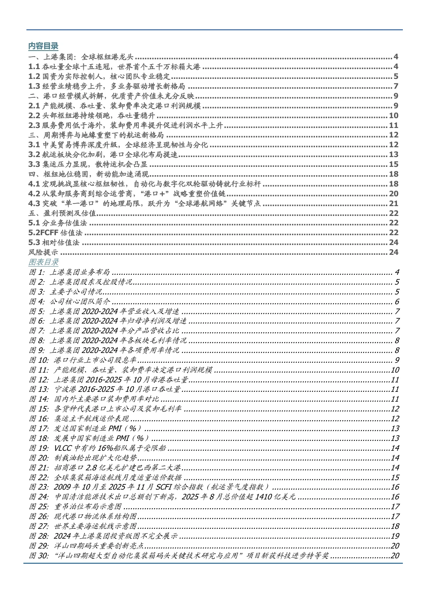
查看本页文字（表格与公式以原页为准）
内容目录 一、上港集团：全球枢纽港龙头 ................................ ................................ ................................ ........... 4 1.1 吞吐量全球十五连冠，世界首个五千万标箱大港 ................................ ................................ ............... 4 1.2 国资为实际控制人，核心团队专业稳定 ................................ ................................ ............................ 5 1.3 经营业绩稳步上升，多业务驱动增长新格局 ................................ ................................ ..................... 7 二、港口经营模式拆解，优质资产价值未充分反映 ................................ ................................ .................. 9 2.1 产能规模、吞吐量、装卸费率决定港口利润规模 ................................ ................................ ............... 9 2.2 头部枢纽港持续领跑，吞吐量稳升 ................................ ................................ ................................ 10 2.3 服务费用低于海外，装卸费用率提升促进利润水平上升 ................................ ................................ .... 11 三、周期博弈与地缘重塑下的航运新格局 ................................ ................................ ............................ 12 3.1 中美贸易博弈深度升级，全球经济呈现韧性与分化 ................................ ................................ .......... 12 3.2 航运板块分化加剧，港口全球化布局提速 ................................ ................................ ....................... 13 3.3 集运压力显现，散特运机会凸显 ................................ ................................ ................................ ... 15 四、枢纽地位稳固，新动能加速涌现 ................................ ................................ ................................ ... 18 4.1 宏观挑战显核心枢纽韧性，自动化与数字化双轮驱动铸就行业标杆 ................................ .................... 18 4.2 从装卸服务商到综合运营商， “港口+”战略重塑价值链 ................................ ................................ ... 20 4.3 突破“单一港口”的地理局限，跃升为“全球港航网络”关键节点 ................................ .................... 21 五、盈利预测及估值 ................................ ................................ ................................ ......................... 22 5.1 分业务估值法 ................................ ................................ ................................ ............................ 22 5.2FCFF 估值法 ................................ ................................ ................................ .............................. 22 5.3 相对估值法 ................................ ................................ ................................ ............................... 24 风险提示 ................................ ................................ ................................ ................................ ........ 24 图表目录 图 1：上港集团业务布局 ......................................................................................................................... 4 图 2：上港集团股东及控股情况 ................................................................................................................ 5 图 3：主要子公司情况 ............................................................................................................................. 5 图 4：公司核心团队简介 ......................................................................................................................... 6 图 5：上港集团 2020-2024 年营业收入及增速 ........................................................................................... 7 图 6：上港集团 2020-2024 年归母净利润及增速 ........................................................................................ 7 图 7：上港集团 2020-2024 年分产品营收占比 ........................................................................................... 7 图 8：上港集团 2020-2024 年各板块毛利率情况 ........................................................................................ 8 图 9：上港集团 2020-2024 年各项费用率情况 ........................................................................................... 8 图 10：港口行业上市公司股息率 .............................................................................................................. 9 图 11：产能规模、吞吐量、装卸费率决定港口利润规模 ............................................................................10 图 12：上港集团 2016-2025 年 10 月母港吞吐量 .......................................................................................11 图 13：宁波港 2016-2025 年 10 月港口吞吐量 ..........................................................................................11 图 14：国内外主要港口装卸费用率对比 ...................................................................................................11 图 15：各货种代表港口上市公司及装卸毛利率 .........................................................................................12 图 16：集运主干航线运价表现 ................................................................................................................12 图 17：发达国家制造业 PMI（ %） ..........................................................................................................13 图 18：发展中国家制造业 PMI（ %） .......................................................................................................13 图 19：VLCC 中有约 16%船队属于受限船 ................................................................................................14 图 20：制裁油轮出现扩大化趋势 .............................................................................................................14 图 21：招商港口 2.8 亿美元扩建巴西第二大港 ..........................................................................................14 图 22：全球集装箱海运航线月度运量运价数据 .........................................................................................15 图 23：2009 年 10 月至 2025 年 11 月 SCFI 综合指数（航运景气度指数） ...................................................16 图 24：中国清洁能源技术出口总额创下新高，2025 年 8 月总价值超 1410 亿美元 ........................................16 图 25：重吊泊位布局示意图 ...................................................................................................................17 图 26：现代港口物流体系结构图 .............................................................................................................17 图 27：世界主要海运航线示意图 .............................................................................................................18 图 28：2024 年上港集团投资版图不完全展示 ...........................................................................................19 图 29：洋山四期码头重要创新亮点 ..........................................................................................................20 图 30： “洋山四期超大型自动化集装箱码头关键技术研究与应用”项目斩获科技进步特等奖 ..........................20
查看本页文字（表格与公式以原页为准）
图 31：2024 年锦江航运营业绩回升向好 ..................................................................................................21 图 32：子公司哪吒科技提供港航供应链数字化解决方案 ............................................................................21 图 33：港口头部企业的部分股权关系 ......................................................................................................21 图 34：现金流预测假设 ..........................................................................................................................23 图 35：可比公司估值情况 .......................................................................................................................24
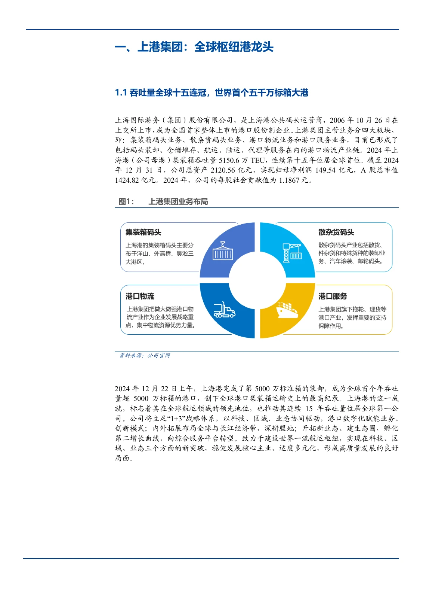
查看本页文字（表格与公式以原页为准）
一、上港集团：全球枢纽港龙头 1.1 吞吐量全球十五连冠，世界首个五千万标箱大港 上海国际港务（集团）股份有限公 司，是上海港公共码头运营商，2006 年 10 月 26 日在 上交所上市， 成为全国首家整体上市的港口股份制企业。 上港集团主营业务分四大板块， 即：集装箱码头业务、散杂货码头业务、港口物流业务和港口服务业务，目前已形成了 包括码头装卸、仓储堆存、航运、陆运、代理等服务在内的港口物流产业链。2024 年上 海港 （公司母港） 集装箱吞吐量5150.6 万 TEU， 连续第十五年位居全球首位。 截至2024 年 12 月 31 日，公司总资产 2120.56 亿元，实现归母净利润 149.54 亿元，A 股总市值 1424.82 亿元。2024 年，公司的每股社会贡献值为 1.1867 元。 图1： 上港集团业务布局 资料来源：公司官网 2024 年 12 月 22 日上午，上海港完成了第 5000 万标准箱的装卸，成为全球首个年吞吐 量超 5000 万标箱的港口，创下全球港口集装箱运输史上的最高纪录。上海港的这一成 就，标志着其在全球航运领域的领先地位，也推动其连续 15 年吞吐量位居全球第一公 司。公司将立足“1+3”战略体系，以科技、区域、业态协同驱动，港口数字化赋能业务、 创新模式；内外拓展布局全球与长江经济带，深耕腹地；开拓新业态、建生态圈，孵化 第二增长曲线，向综合服务平台转型。致力于建设世界一流航运枢纽，实现在科技、区 域、业态三个方面的新突破，稳健发展核心主业、适度多元化，形成高质量发展的良好 局面。
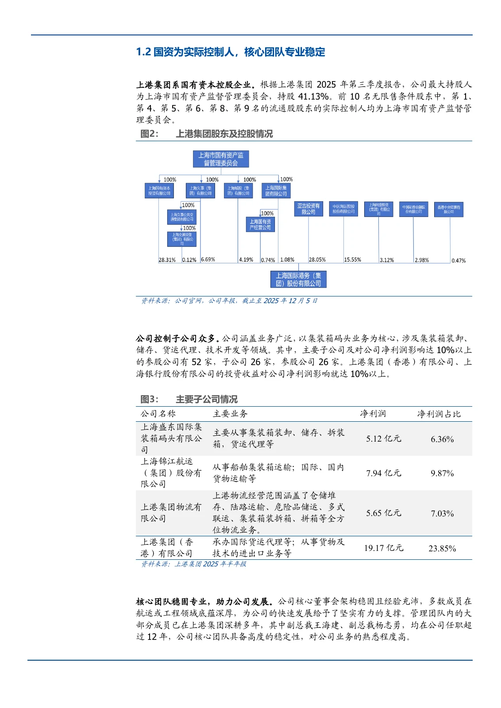
查看本页文字（表格与公式以原页为准）
1.2 国资为实际控制人，核心团队专业稳定 上港集团系国有资本控股企业。根据上港集团 2025 年第三季度报告，公司最大持股人 为上海市国有资产监督管理委员会，持股 41.13%。前 10 名无限售条件股东中，第 1、 第 4、第 5、第 6、第 8、第 9 名的流通股股东的实际控制人均为上海市国有资产监督管 理委员会。 图2： 上港集团股东及控股情况 资料来源：公司官网，公司年报，截止至 2025 年 12 月 5 日 公司控制子公司众多。公司涵盖业务广泛，以集装箱码头业务为核心，涉及集装箱装卸、 储存、货运代理、技术开发等领域。其中，主要子公司及对公司净利润影响达10%以上 的参股公司有 52 家，子公司 26 家，参股公司 26 家。上港集团（香港）有限公司、上 海银行股份有限公司的投资收益对公司净利润影响就达 10%以上。 图3： 主要子公司情况 公司名称 主要业务 净利润 净利润占比 上海盛东国际集 装箱码头有限公 司 主要从事集装箱装卸、储存、拆装 箱，货运代理等 5.12 亿元 6.36% 上海锦江航运 （集团）股份有 限公司 从事船舶集装箱运输；国际、国内 货物运输等 7.94 亿元 9.87% 上港集团物流有 限公司 上港物流经营范围涵盖了仓储堆 存、陆路运输、危险品储运、多式 联运、集装箱装拆箱、拼箱等全方 位物流业务。 5.65 亿元 7.03% 上港集团（香 港）有限公司 承办国际货运代理等；从事货物及 技术的进出口业务等 19.17 亿元 23.85% 资料来源：上港集团 2025 年半年报 核心团队稳固专业，助力公司发展。公司核心董事会架构稳固且经验充沛，多数成员在 航运或工程领域底蕴深厚，为公司的快速发展给予了坚实有力的支撑。管理团队内的大 部分成员已在上港集团深耕多年，其中副总裁王海建、副总裁杨志勇，均在公司任职超 过 12 年，公司核心团队具备高度的稳定性，对公司业务的熟悉程度高。
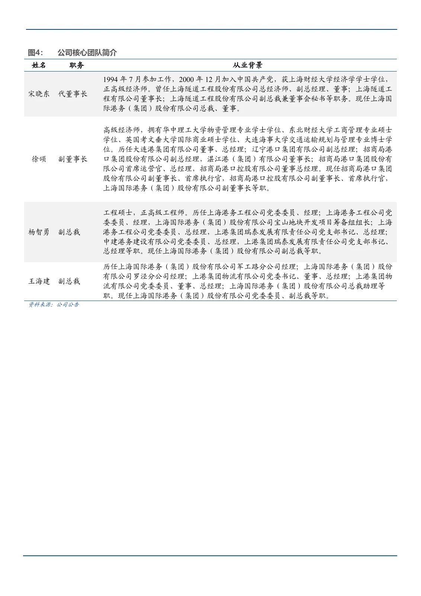
查看本页文字（表格与公式以原页为准）
图4： 公司核心团队简介 姓名 职务 从业背景 宋晓东 代董事长 1994 年 7 月参加工作，2000 年 12 月加入中国共产党，获上海财经大学经济学学士学位， 正高级经济师。曾任上海隧道工程股份有限公司总经济师、副总经理、董事；上海隧道工 程有限公司董事长；上海隧道工程股份有限公司副总裁兼董事会秘书等职务。现任上海国 际港务（集团）股份有限公司总裁、董事。 徐颂 副董事长 高级经济师，拥有华中理工大学物资管理专业学士学位、东北财经大学工商管理专业硕士 学位、英国考文垂大学国际商业硕士学位、大连海事大学交通运输规划与管理专业博士学 位。历任大连港集团有限公司董事、总经理；辽宁港口集团有限公司副总经理；招商局港 口集团股份有限公司副总经理，湛江港（集团）有限公司董事长；招商局港口集团股份有 限公司首席运营官、总经理，招商局港口控股有限公司董事总经理。现任招商局港口集团 股份有限公司副董事长、首席执行官，招商局港口控股有限公司副董事长、首席执行官， 上海国际港务（集团）股份有限公司副董事长等职。 杨智勇 副总裁 工程硕士，正高级工程师。历任上海港务工程公司党委委员、经理；上海港务工程公司党 委委员、经理，上海国际港务（集团）股份有限公司宝山地块开发项目筹备组组长；上海 港务工程公司党委委员、总经理，上港集团瑞泰发展有限责任公司党支部书记、总经理； 中建港务建设有限公司党委委员、总经理，上港集团瑞泰发展有限责任公司党支部书记、 总经理等职。现任上海国际港务（集团）股份有限公司副总裁等职。 王海建 副总裁 历任上海国际港务（集团）股份有限公司军工路分公司经理；上海国际港务（集团）股份 有限公司罗泾分公司经理；上港集团物流有限公司党委书记、董事、总经理；上港集团物 流有限公司党委委员、董事、总经理；上海国际港务（集团）股份有限公司总裁助理等 职。现任上海国际港务（集团）股份有限公司党委委员、副总裁等职。 资料来源：公司公告
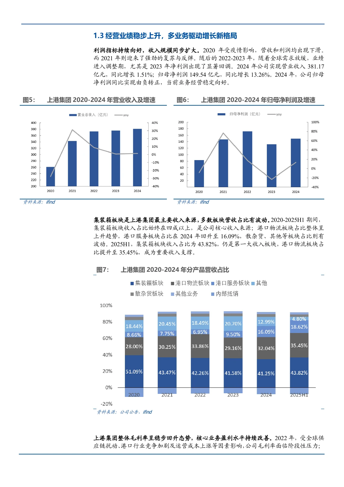
查看本页文字（表格与公式以原页为准）
1.3 经营业绩稳步上升，多业务驱动增长新格局 利润指标持续向好，收入规模同步扩大。2020 年受疫情影响，营收和利润均出现下滑。 而 2021 年则迎来了强劲的复苏与反弹。随后的2022-2023 年，随着全球需求放缓，业绩 进入调整期，尤其是 2023 年净利润出现了显著回调。2024 年公司实现营业收入 381.17 亿元， 同比增长1.51%； 归母净利润149.54 亿元， 同比增长13.26%。2024 年， 公司归母 净利润同比实现由负转正，当前业务经营稳定向好。 图5： 上港集团 2020-2024 年营业收入及增速 图6： 上港集团 2020-2024 年归母净利润及增速 资料来源：ifind 资料来源：ifind 集装箱板块是上港集团最主要收入来源， 多数板块营收占比有波动。2020-2025H1 期间， 集装箱板块收入占比始终在四成以上，是公司核心收入来源；港口物流板块占比整体呈 上升趋势，港口服务板块占比在 2024 年回升至 16.09%，散杂货、其他等板块占比则有 波动。2025H1， 集装箱板块收入占比为43.82%， 仍是第一大收入板块， 港口物流板块占 比提升至 35.45%，成为重要收入支撑。 图7： 上港集团 2020-2024 年分产品营收占比 资料来源：公司公告，ifind 上港集团整体毛利率呈稳步回升态势， 核心业务盈利水平持续改善。2022 年， 受全球供 应链扰动、 港口行业竞争加剧及运营成本上涨等因素影响， 公司毛利率面临阶段性压力；
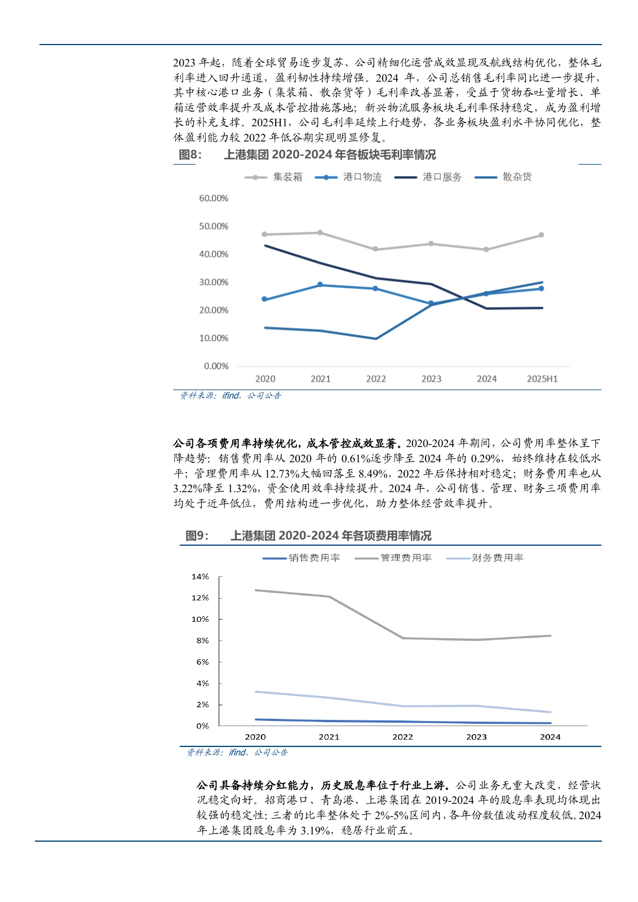
查看本页文字（表格与公式以原页为准）
2023 年起，随着全球贸易逐步复苏、公司精细化运营成效显现及航线结构优化，整体毛 利率进入回升通道，盈利韧性持续增强。2024 年，公司总销售毛利率同比进一步提升， 其中核心港口业务（集装箱、散杂货等）毛利率改善显著，受益于货物吞吐量增长、单 箱运营效率提升及成本管控措施落地；新兴物流服务板块毛利率保持稳定，成为盈利增 长的补充支撑。2025H1，公司毛利率延续上行趋势，各业务板块盈利水平协同优化，整 体盈利能力较 2022 年低谷期实现明显修复。 图8： 上港集团 2020-2024 年各板块毛利率情况 资料来源：ifind，公司公告 公司各项费用率持续优化， 成本管控成效显著。2020-2024 年期间， 公司费用率整体呈下 降趋势：销售费用率从 2020 年的 0.61%逐步降至 2024 年的 0.29%，始终维持在较低水 平； 管理费用率从12.73%大幅回落至 8.49%，2022 年后保持相对稳定； 财务费用率也从 3.22%降至 1.32%， 资金使用效率持续提升。2024 年， 公司销售、 管理、 财务三项费用率 均处于近年低位，费用结构进一步优化，助力整体经营效率提升。 图9： 上港集团 2020-2024 年各项费用率情况 资料来源：ifind、公司公告 公司具备持续分红能力，历史股息率位于行业上游。公司业务无重大改变，经营状 况稳定向好。招商港口、青岛港、上港集团在 2019-2024 年的股息率表现均体现出 较强的稳定性： 三者的比率整体处于2%-5%区间内， 各年份数值波动程度较低。2024 年上港集团股息率为 3.19%，稳居行业前五。
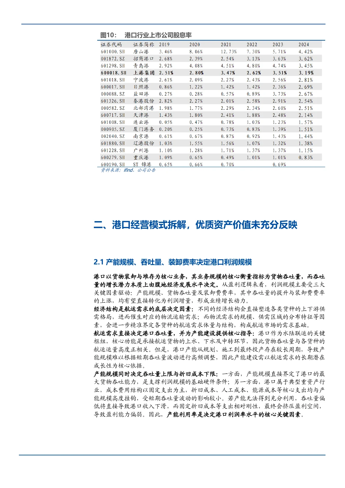
查看本页文字（表格与公式以原页为准）
图10： 港口行业上市公司股息率 资料来源：ifind、公司公告 二、港口经营模式拆解，优质资产价值未充分反映 2.1 产能规模、吞吐量、装卸费率决定港口利润规模 港口以货物装卸与堆存为核心业务，其业务规模的核心衡量指标为货物吞吐量，而吞吐 量的增长潜力本质上由腹地经济发展水平决定。从盈利逻辑来看，利润规模主要受三大 关键因素驱动：产能规模、货物吞吐量及装卸费费率，其中吞吐量的提升与装卸费费率 的上涨，均有望直接转化为利润增量，形成业绩增长动力。 经济结构是航运需求的底层决定因素：不同的经济结构会直接塑造各类货种的上下游供 需格局，进而催生对应的物流运输需求；而物流需求的规模、供需区域的分布特征等因 素，会进一步精准界定各货种的航运需求体量与结构，构成航运市场的需求基础。 航运需求直接决定港口吞吐量，并为产能建设提供核心指导：港口作为水陆联运的关键 枢纽，核心功能是承接航运货物的上水、下水及中转环节，因此货物吞吐量与各货种的 航运运量高度正相关。但是，港口产能从规划、施工到最终投产存在较长周期，导致产 能规模难以根据短期吞吐量波动进行高频调整，因此产能建设需以航运需求的长期潜在 成长性为核心依据。 产能规模同时决定吞吐量上限与折旧成本下限：一方面，产能规模直接界定了港口的最 大货物吞吐能力，是支撑利润规模的基础硬件条件；另一方面，港口属于典型重资产行 业，成本费用结构以固定支出为主，折旧成本、人工成本、能源成本等核心支出均与产 能规模高度挂钩，受短期吞吐量波动的影响较小。若产能无法得到充分利用，吞吐量偏 低将直接导致港口收入下滑，而固定折旧成本等支出相对刚性，最终会挤压盈利空间， 导致盈利能力偏弱。因此，产能利用率是决定港口利润率水平的核心关键因素。

查看本页文字（表格与公式以原页为准）
图11： 产能规模、吞吐量、装卸费率决定港口利润规模 资料来源：自制 2.2 头部枢纽港持续领跑，吞吐量稳升 作为全球集装箱第一大港，上海港的长期吞吐量仍具备稳定增长支撑。其核心优势源于 三重基础：一是腹地覆盖整个长江流域，经济纵深广阔且产业活力充沛；二是航运条件 得天独厚，叠加公路、铁路等集疏运网络的高密度覆盖，形成“水陆联运、内外联通”的 立体物流格局； 三是依托长三角产业集群与贸易需求， 市场根基扎实且抗风险能力突出。 从行业规律来看，枢纽港吞吐量增长呈现“短期联动经济、长期趋势向上”的特征：短期 维度，港口集装箱贸易量与腹地经济增速高度相关——经济上行周期中，制造业产出与 进出口贸易扩张直接带动集装箱吞吐量提升；而经济景气度回落时，吞吐量增速会受到 阶段性抑制， 但枢纽港凭借资源集聚效应， 回调幅度显著小于区域中小港口。 长期维度， 全球贸易网络化、供应链枢纽化的趋势下，枢纽港作为货物集散核心与航线中转节点， 其集装箱吞吐量整体呈持续上升态势，行业龙头地位进一步巩固。 上港集团财务经营的稳健向好，核心支撑源于母港上海港的运营韧性与行业引领力，而 长三角港口群的协同发展则进一步强化了这一优势——上海港持续稳固全球集装箱枢纽 龙头地位， 宁波港保持货物吞吐量高速增长态势， 两者形成“核心引领+差异化互补”的格 局，共同构成长三角港口群的核心竞争力。 从业务运营数据来看， 上海港与宁波港的吞吐量均呈现长期波动上升趋势：在2019-2020 年疫情冲击、2023 年全球贸易复苏放缓等节点，两港均经历阶段性回调，但凭借枢纽优 势快速恢复， 彰显强抗周期能力。 二者的差异化特征显著： 上海港聚焦集装箱核心业务， 作为全球第一大集装箱港口，货物吞吐量长期稳定在 4000-6000 万吨区间，集装箱吞吐 量基数更高且波动更为平缓，2025 年上半年集装箱吞吐量达 2150 万 TEU，依托成熟的 国际航线网络与全球航运枢纽功能，筑牢收入基本盘；宁波港则以货物吞吐量高增长为 核心标签，货物吞吐量从 2016 年约 4000 万吨跃升至 2025 年超 1 亿吨，2025 年前三季 度已达 10.78 亿吨， 集装箱业务后期增速尤为突出 （2025 年 1-9 月同比增长 10%） 。 作为 全球第三大集装箱港口与货物吞吐量全球第一的综合性港口，宁波港的业务结构为区域 港航市场提供了关键补充，既完善了长三角港口生态的服务维度，也间接为上港集团的 行业竞争优势与财务稳定性注入持续动力。
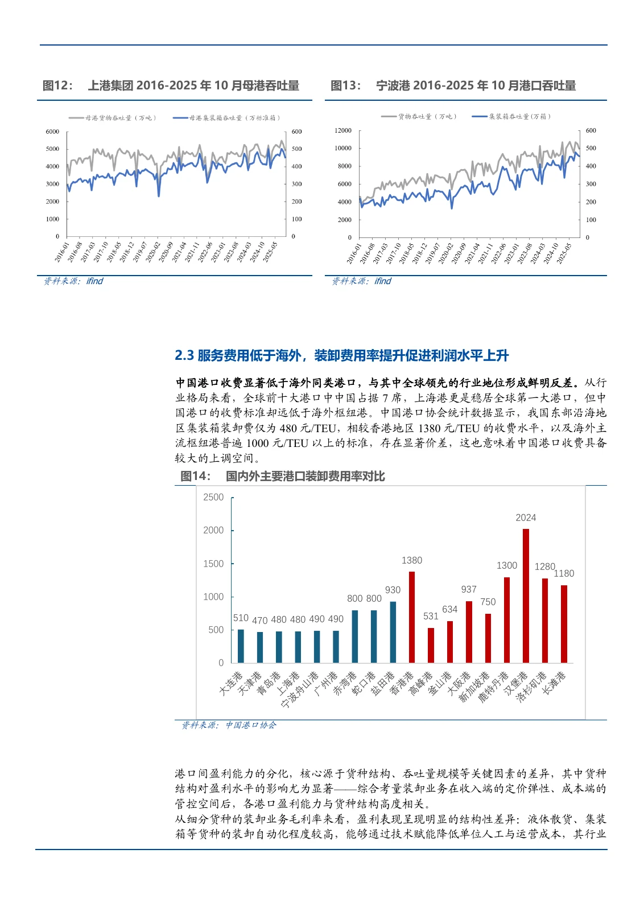
查看本页文字（表格与公式以原页为准）
图12： 上港集团 2016-2025 年 10 月母港吞吐量 图13： 宁波港 2016-2025 年 10 月港口吞吐量 资料来源：ifind 资料来源：ifind 2.3 服务费用低于海外，装卸费用率提升促进利润水平上升 中国港口收费显著低于海外同类港口，与其中全球领先的行业地位形成鲜明反差。从行 业格局来看，全球前十大港口中中国占据 7 席，上海港更是稳居全球第一大港口，但中 国港口的收费标准却远低于海外枢纽港。中国港口协会统计数据显示，我国东部沿海地 区集装箱装卸费仅为 480 元/TEU，相较香港地区 1380 元/TEU 的收费水平，以及海外主 流枢纽港普遍 1000 元/TEU 以上的标准，存在显著价差，这也意味着中国港口收费具备 较大的上调空间。 图14： 国内外主要港口装卸费用率对比 资料来源：中国港口协会 港口间盈利能力的分化，核心源于货种结构、吞吐量规模等关键因素的差异，其中货种 结构对盈利水平的影响尤为显著——综合考量装卸业务在收入端的定价弹性、成本端的 管控空间后，各港口盈利能力与货种结构高度相关。 从细分货种的装卸业务毛利率来看，盈利表现呈现明显的结构性差异：液体散货、集装 箱等货种的装卸自动化程度较高，能够通过技术赋能降低单位人工与运营成本，其行业 510 470 480 480 490 490 800 800 930 1380 531 634 937 750 1300 2024 12801180 0 500 1000 1500 2000 2500
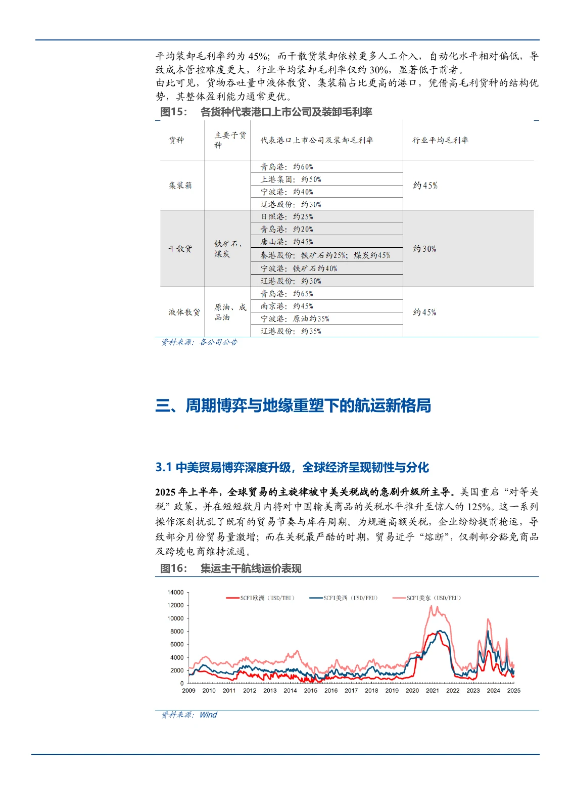
查看本页文字（表格与公式以原页为准）
平均装卸毛利率约为 45%；而干散货装卸依赖更多人工介入，自动化水平相对偏低，导 致成本管控难度更大，行业平均装卸毛利率仅约 30%，显著低于前者。 由此可见，货物吞吐量中液体散货、集装箱占比更高的港口，凭借高毛利货种的结构优 势，其整体盈利能力通常更优。 图15： 各货种代表港口上市公司及装卸毛利率 资料来源：各公司公告 三、周期博弈与地缘重塑下的航运新格局 3.1 中美贸易博弈深度升级，全球经济呈现韧性与分化 2025 年上半年， 全球贸易的主旋律被中美关税战的急剧升级所主导。美国重启 “对等关 税” 政策， 并在短短数月内将对中国输美商品的关税水平推升至惊人的125%。 这一系列 操作深刻扰乱了既有的贸易节奏与库存周期。为规避高额关税，企业纷纷提前抢运，导 致部分月份贸易量激增； 而在关税最严酷的时期， 贸易近乎 “熔断” ， 仅剩部分豁免商品 及跨境电商维持流通。 图16： 集运主干航线运价表现 资料来源：Wind
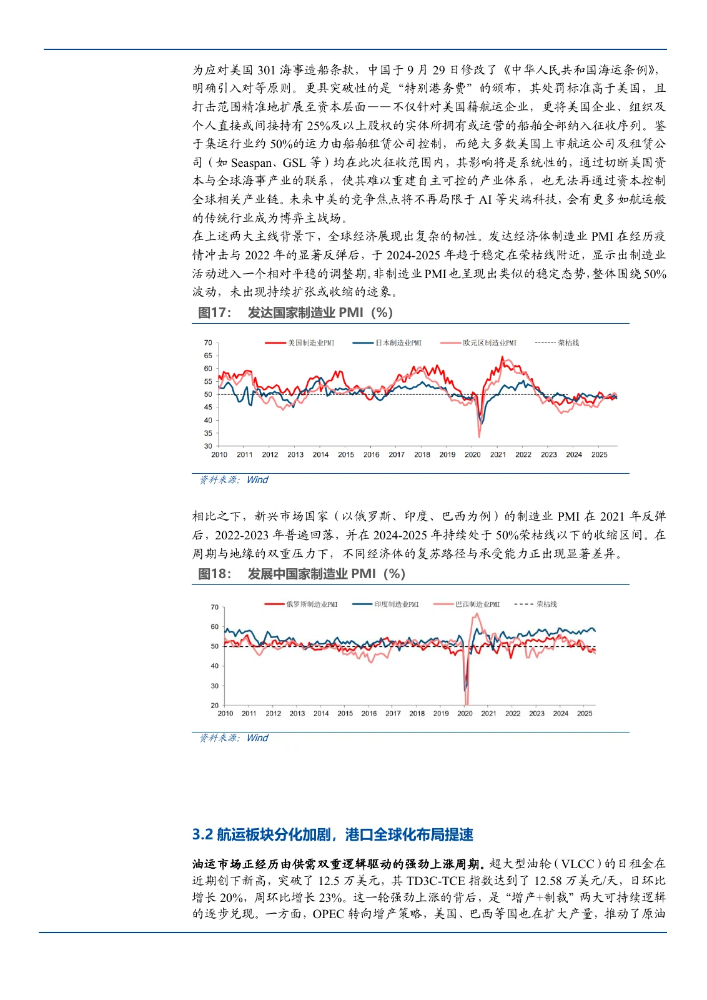
查看本页文字（表格与公式以原页为准）
为应对美国 301 海事造船条款，中国于 9 月 29 日修改了《中华人民共和国海运条例》 ， 明确引入对等原则。更具突破性的是“特别港务费”的颁布，其处罚标准高于美国，且 打击范围精准地扩展至资本层面——不仅针对美国籍航运企业，更将美国企业、组织及 个人直接或间接持有 25%及以上股权的实体所拥有或运营的船舶全部纳入征收序列。鉴 于集运行业约 50%的运力由船舶租赁公司控制，而绝大多数美国上市航运公司及租赁公 司 （如 Seaspan、GSL 等） 均在此次征收范围内， 其影响将是系统性的，通过切断美国资 本与全球海事产业的联系，使其难以重建自主可控的产业体系，也无法再通过资本控制 全球相关产业链。 未来中美的竞争焦点将不再局限于AI 等尖端科技， 会有更多如航运般 的传统行业成为博弈主战场。 在上述两大主线背景下， 全球经济展现出复杂的韧性。 发达经济体制造业PMI 在经历疫 情冲击与 2022 年的显著反弹后， 于2024-2025 年趋于稳定在荣枯线附近， 显示出制造业 活动进入一个相对平稳的调整期。 非制造业PMI 也呈现出类似的稳定态势， 整体围绕50% 波动，未出现持续扩张或收缩的迹象。 图17： 发达国家制造业 PMI（%） 资料来源：Wind 相比之下，新兴市场国家（以俄罗斯、印度、巴西为例）的制造业 PMI 在 2021 年反弹 后，2022-2023 年普遍回落， 并在2024-2025 年持续处于 50%荣枯线以下的收缩区间。 在 周期与地缘的双重压力下，不同经济体的复苏路径与承受能力正出现显著差异。 图18： 发展中国家制造业 PMI（%） 资料来源：Wind 3.2 航运板块分化加剧，港口全球化布局提速 油运市场正经历由供需双重逻辑驱动的强劲上涨周期。超大型油轮 （VLCC） 的日租金在 近期创下新高， 突破了12.5 万美元， 其TD3C-TCE 指数达到了 12.58 万美元/天， 日环比 增长 20%， 周环比增长23%。 这一轮强劲上涨的背后， 是 “增产+制裁” 两大可持续逻辑 的逐步兑现。 一方面，OPEC 转向增产策略， 美国、 巴西等国也在扩大产量， 推动了原油
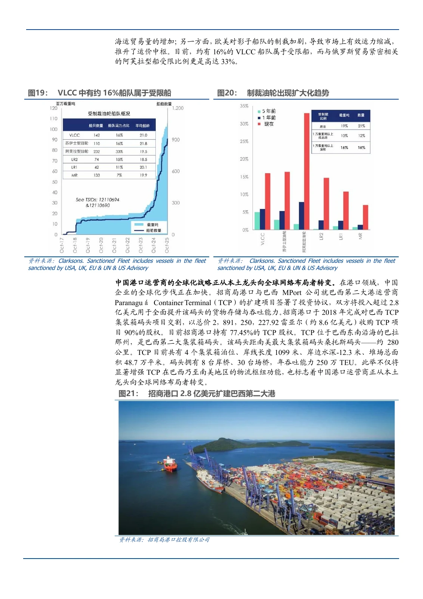
查看本页文字（表格与公式以原页为准）
海运贸易量的增加； 另一方面， 欧美对影子船队的制裁加剧， 导致市场上有效运力缩减， 推升了运价中枢。目前，约有16%的 VLCC 船队属于受限船，而与俄罗斯贸易紧密相关 的阿芙拉型船受限比例更是高达 33%。 图19： VLCC 中有约 16%船队属于受限船 图20： 制裁油轮出现扩大化趋势 资料来源： Clarksons. Sanctioned Fleet includes vessels in the fleet sanctioned by USA, UK, EU & UN & US Advisory 资料来源： Clarksons. Sanctioned Fleet includes vessels in the fleet sanctioned by USA, UK, EU & UN & US Advisory 中国港口运营商的全球化战略正从本土龙头向全球网络布局者转变。在港口领域，中国 企业的全球化步伐正在加快。招商局港口与巴西 MPort 公司就巴西第二大港运营商 Paranaguá Container Terminal（（TCP）的扩建项目签署了投资协议，双方将投入超过2.8 亿美元用于全面提升该码头的货物存储与吞吐能力。招商港口于 2018 年完成对巴西 TCP 集装箱码头项目交割， 以总价2，891，250，227.92 雷亚尔 （约 8.6 亿美元） 收购TCP 项 目 90%的股权。目前招商港口持有 77.45%的 TCP 股权。TCP 位于巴西东南沿海的巴拉 那州，是巴西第二大集装箱码头。该码头距南美最大集装箱码头桑托斯码头——约 280 公里。TCP 目前共有 4 个集装箱泊位、岸线长度 1099 米、岸边水深-12.3 米、堆场总面 积 48.7 万平米。码头拥有 8 台岸桥、30 台场桥，年吞吐能力 250 万 TEU。此举不仅将 显著增强 TCP 在巴西乃至南美地区的物流枢纽功能， 也标志着中国港口运营商正从本土 龙头向全球网络布局者转变。 图21： 招商港口 2.8 亿美元扩建巴西第二大港 资料来源：招商局港口控股有限公司
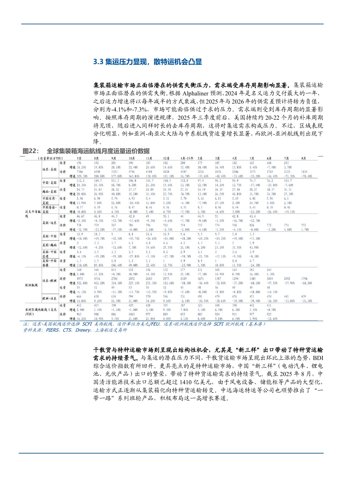
查看本页文字（表格与公式以原页为准）
3.3 集运压力显现，散特运机会凸显 集装箱运输市场正面临潜在的供需失衡压力，需求端受库存周期影响显著。集装箱运输 市场正面临潜在的供需失衡。 根据Alphaliner 预测，2024 年是名义运力交付最大的一年， 之后运力增速将以每年减半的方式衰减， 但2025 年与2026 年的供需差预计将转为负值， 分别为-4.1%和-7.3%，市场可能面临供过于求的压力。需求端则受到库存周期的显著影 响。按照库存周期的演进规律，2025 年三季度前后，美国持续约 20-22 个月的补库周期 将见顶，随后进入同样时长的去库存周期，这将对集运需求构成压力。不过，区域表现 分化明显， 例如亚洲-南亚次大陆与中东航线货运量增长显著， 而欧洲-亚洲航线则出现下 降。 图22： 全球集装箱海运航线月度运量运价数据 注：远东-美国航线运价选择 SCFI 美西航线，运价单位为美元/FEU，远东-欧洲航线运价选择 SCFI 欧洲航线（基本港） 资料来源：PIERS，CTS，Drewry，上海航运交易所 干散货与特种运输市场则呈现出结构性机会，尤其是“新三样”出口带动了特种货运输 需求的持续景气。与集运的潜在压力不同， 干散货运输市场呈现出环比上涨的态势，BDI 综合运价指数有所回升。 更具亮点的是特种运输市场，中国“新三样” （电动汽车、 锂电 池、光伏产品）出口的繁荣，带动了特种货运输需求的持续景气。 截至2025 年 8 月，中 国清洁能源技术出口总额已超过 1410 亿美元，由于风电设备、储能柜等产品的大型化， 运输方式正逐渐从集装箱化向特种货运输转变。中远海运特运等公司也顺势推出了“一 带一路”系列班轮产品，积极布局这一高增长赛道。
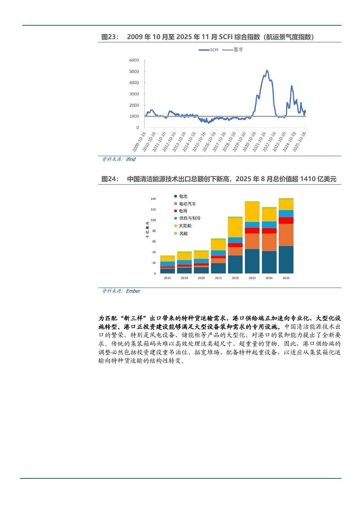
查看本页文字（表格与公式以原页为准）
图23： 2009 年 10 月至 2025 年 11 月 SCFI 综合指数（航运景气度指数） 资料来源：ifind 图24： 中国清洁能源技术出口总额创下新高，2025 年 8 月总价值超 1410 亿美元 资料来源：Ember 为匹配“新三样”出口带来的特种货运输需求，港口供给端正加速向专业化、大型化设 施转型。港口正投资建设能够满足大型设备装卸需求的专用设施。中国清洁能源技术出 口的繁荣，特别是风电设备、储能柜等产品的大型化，对港口的装卸能力提出了全新要 求。传统的集装箱码头难以高效处理这类超尺寸、超重量的货物。因此，港口供给端的 调整必然包括投资建设重吊泊位、拓宽堆场、配备特种起重设备，以适应从集装箱化运 输向特种货运输的结构性转变。
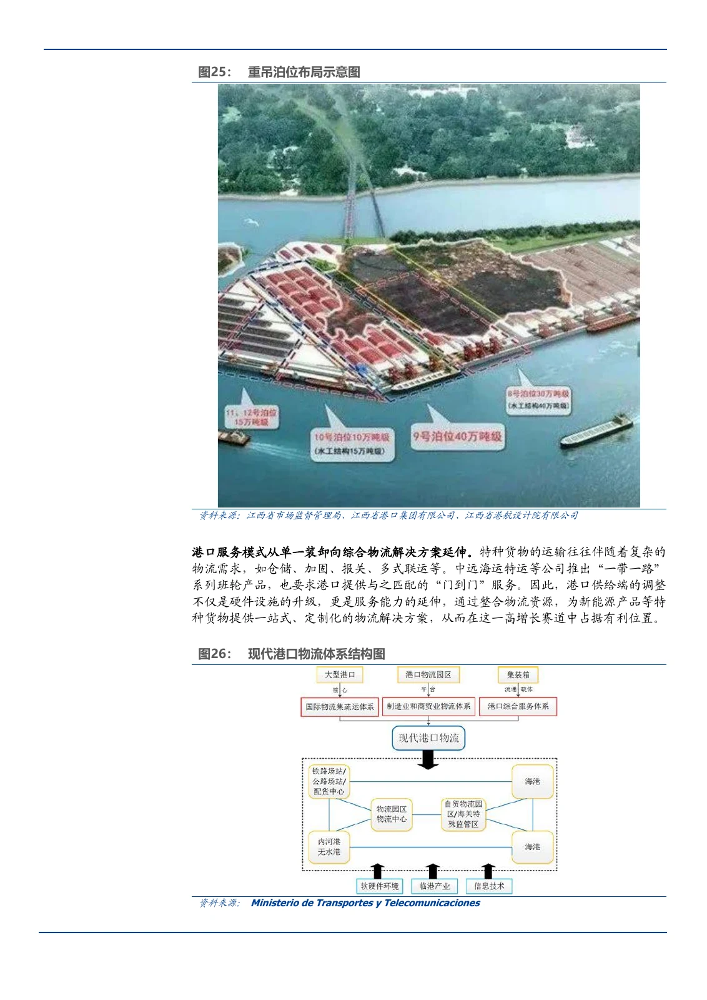
查看本页文字（表格与公式以原页为准）
图25： 重吊泊位布局示意图 资料来源：江西省市场监督管理局、江西省港口集团有限公司、江西省港航设计院有限公司 港口服务模式从单一装卸向综合物流解决方案延伸。特种货物的运输往往伴随着复杂的 物流需求，如仓储、加固、报关、多式联运等。中远海运特运等公司推出“一带一路” 系列班轮产品，也要求港口提供与之匹配的“门到门”服务。因此，港口供给端的调整 不仅是硬件设施的升级，更是服务能力的延伸，通过整合物流资源，为新能源产品等特 种货物提供一站式、定制化的物流解决方案，从而在这一高增长赛道中占据有利位置。 图26： 现代港口物流体系结构图 资料来源： Ministerio de Transportes y Telecomunicaciones
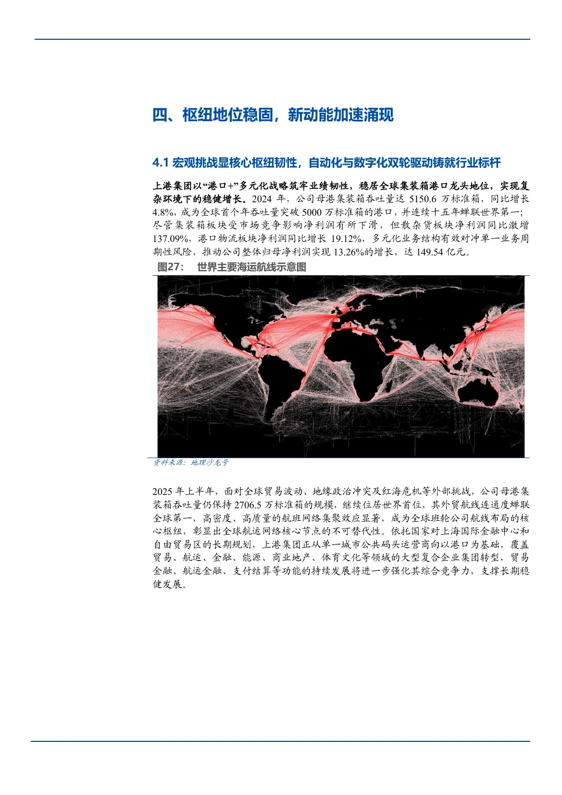
查看本页文字（表格与公式以原页为准）
四、枢纽地位稳固，新动能加速涌现 4.1 宏观挑战显核心枢纽韧性，自动化与数字化双轮驱动铸就行业标杆 上港集团以“港口+”多元化战略筑牢业绩韧性，稳居全球集装箱港口龙头地位，实现复 杂环境下的稳健增长。2024 年，公司母港集装箱吞吐量达 5150.6 万标准箱，同比增长 4.8%， 成为全球首个年吞吐量突破5000 万标准箱的港口， 并连续十五年蝉联世界第一； 尽管集装箱板块受市场竞争影响净利润有所下滑，但散杂货板块净利润同比激增 137.09%，港口物流板块净利润同比增长 19.12%，多元化业务结构有效对冲单一业务周 期性风险，推动公司整体归母净利润实现 13.26%的增长，达 149.54 亿元。 图27： 世界主要海运航线示意图 资料来源：地理沙龙号 2025 年上半年，面对全球贸易波动、地缘政治冲突及红海危机等外部挑战，公司母港集 装箱吞吐量仍保持 2706.5 万标准箱的规模，继续位居世界首位，其外贸航线连通度蝉联 全球第一，高密度、高质量的航班网络集聚效应显著，成为全球班轮公司航线布局的核 心枢纽，彰显出全球航运网络核心节点的不可替代性。依托国家对上海国际金融中心和 自由贸易区的长期规划，上港集团正从单一城市公共码头运营商向以港口为基础，覆盖 贸易、航运、金融、能源、商业地产、体育文化等领域的大型复合企业集团转型，贸易 金融、航运金融、支付结算等功能的持续发展将进一步强化其综合竞争力，支撑长期稳 健发展。
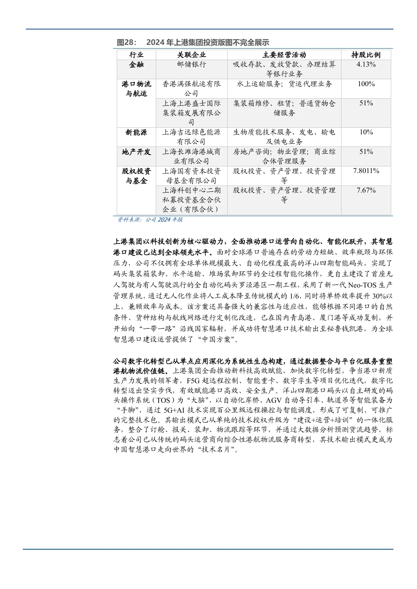
查看本页文字（表格与公式以原页为准）
图28： 2024 年上港集团投资版图不完全展示 行业 关联企业 主要经营活动 持股比例 金融 邮储银行 吸收存款、发放贷款、办理结算 等银行业务 4.13% 港口物流 与航运 香港满强航运有限 公司 水上运输服务；货运代理业务 100% 上海上港盛士国际 集装箱发展有限公 司 集装箱维修、租赁；普通货物仓 储服务 51% 新能源 上海吉远绿色能源 有限公司 生物质能技术服务、发电、输电 及供电业务 10% 地产开发 上海长滩海港城商 业有限公司 房地产咨询；物业管理；商业综 合体管理服务 51% 股权投资 与基金 上海国有资本投资 母基金有限公司 股权投资、资产管理、投资管理 等 7.8011% 上海科创中心二期 私募投资基金合伙 企业（有限合伙） 股权投资、资产管理、投资管理 等 7.67% 资料来源：公司 2024 年报 上港集团以科技创新为核心驱动力，全面推动港口运营向自动化、智能化跃升，其智慧 港口建设已达到全球领先水平。面对全球港口普遍存在的劳动力短缺、效率瓶颈与环保 压力，公司不仅拥有全球单体规模最大、自动化程度最高的洋山四期智能码头，实现了 码头集装箱装卸、水平运输、堆场装卸环节的全过程智能化操作，更自主建设了首座无 人驾驶与有人驾驶混行的全自动化码头罗泾港区一期工程， 采用了新一代Neo-TOS 生产 管理系统，通过无人化作业将人工成本降至传统模式的 1/6， 同时将单桥效率提升30%以 上，兼顾效率与成本。该方案还具备强大的兼容性与适应性，能够根据不同港口的自然 条件、货种结构与航线网络进行定制化改造，已在国内青岛港、厦门港等成功复制，并 开始向“一带一路”沿线国家辐射，并成功将智慧港口技术输出至秘鲁钱凯港，为全球 智慧港口建设运营提供了“中国方案”。 公司数字化转型已从单点应用深化为系统性生态构建，通过数据整合与平台化服务重塑 港航物流价值链。上港集团全面推动新科技高效赋能，加快数字化转型，争当港口新质 生产力发展的领军者，F5G 超远程控制、智能重卡、数字孪生等项目优化迭代，数字化 转型迈出坚实步伐，有效赋能港口高效、安全生产。洋山四期港口码头以自主研发的码 头操作系统 （ TOS） 为 “大脑” ， 以自动化岸桥、AGV 自动导引车、 轨道吊等智能装备为 “手脚” ，通过5G+AI 技术实现百公里级远程操控与智能调度，形成了可复制、可推广 的完整技术包。其输出模式已从单纯的技术授权升级为“建设+运营+培训”的一体化服 务，整合了订舱、报关、装卸、物流跟踪等环节，并通过大数据分析预测货流趋势，标 志着公司已从传统的码头运营商向综合性港航物流服务商转型，其技术输出模式更成为 中国智慧港口走向世界的“技术名片” 。
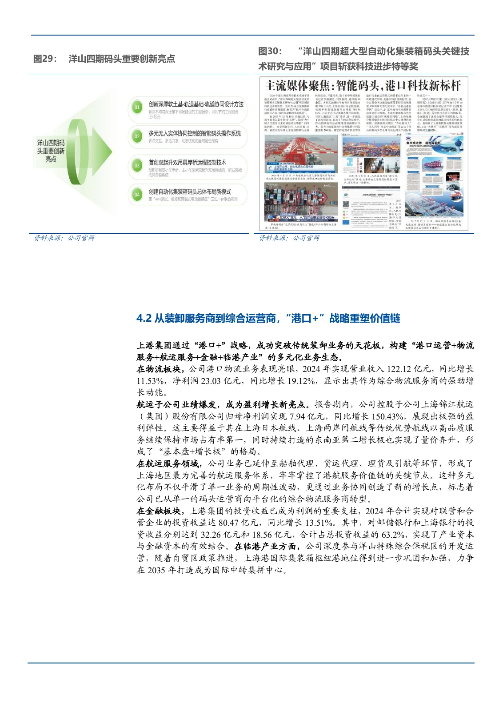
查看本页文字（表格与公式以原页为准）
图29： 洋山四期码头重要创新亮点 图30： “洋山四期超大型自动化集装箱码头关键技 术研究与应用”项目斩获科技进步特等奖 资料来源：公司官网 资料来源：公司官网 4.2 从装卸服务商到综合运营商，“港口+”战略重塑价值链 上港集团通过“港口+”战略，成功突破传统装卸业务的天花板，构建“港口运营+物流 服务+航运服务+金融+临港产业”的多元化业务生态。 在物流板块，公司港口物流业务表现亮眼，2024 年实现营业收入 122.12 亿元， 同比增长 11.53%，净利润 23.03 亿元，同比增长 19.12%，显示出其作为综合物流服务商的强劲增 长动能。 航运子公司业绩爆发，成为盈利增长新亮点。报告期内，公司控股子公司上海锦江航运 （集团）股份有限公司归母净利润实现 7.94 亿元，同比增长 150.43%，展现出极强的盈 利弹性。这主要得益于其在上海日本航线、上海两岸间航线等传统优势航线以高品质服 务继续保持市场占有率第一，同时持续打造的东南亚第二增长极也实现了量价齐升，形 成了“基本盘+增长极”的格局。 在航运服务领域，公司业务已延伸至船舶代理、货运代理、理货及引航等环节，形成了 上海地区最为完善的航运服务体系，牢牢掌控了港航服务价值链的关键节点。这种多元 化布局不仅平滑了单一业务的周期性波动，更通过业务协同创造了新的增长点，标志着 公司已从单一的码头运营商向平台化的综合物流服务商转型。 在金融板块，上港集团的投资收益已成为利润的重要支柱，2024 年合计实现对联营和合 营企业的投资收益达 80.47 亿元，同比增长 13.51%。其中，对邮储银行和上海银行的投 资收益分别达到 32.26 亿元和 18.56 亿元， 合计占总投资收益的63.2%， 实现了产业资本 与金融资本的有效结合。在临港产业方面，公司深度参与洋山特殊综合保税区的开发运 营，随着自贸区政策推进，上海港国际集装箱枢纽港地位得到进一步巩固和加强，力争 在 2035 年打造成为国际中转集拼中心。
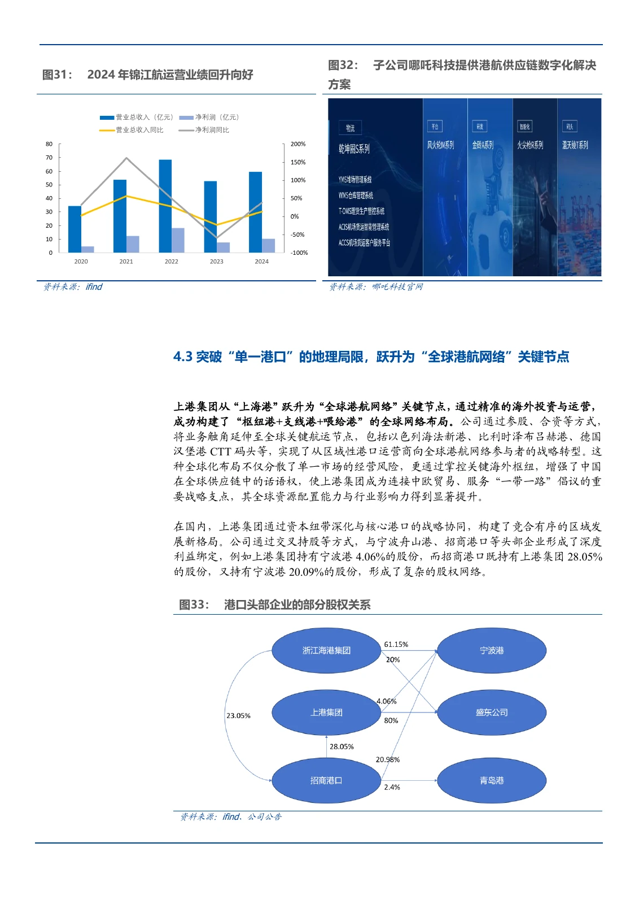
查看本页文字（表格与公式以原页为准）
图31： 2024 年锦江航运营业绩回升向好 图32： 子公司哪吒科技提供 港航供应链数字化解决 方案 资料来源：ifind 资料来源：哪吒科技官网 4.3 突破“单一港口”的地理局限，跃升为“全球港航网络”关键节点 上港集团从 “上海港” 跃升为 “全球港航网络” 关键节点， 通过精准的海外投资与运营， 成功构建了“枢纽港+支线港+喂给港”的全球网络布局。公司通过参股、合资等方式， 将业务触角延伸至全球关键航运节点，包括以色列海法新港、比利时泽布吕赫港、德国 汉堡港 CTT 码头等， 实现了从区域性港口运营商向全球港航网络参与者的战略转型。 这 种全球化布局不仅分散了单一市场的经营风险，更通过掌控关键海外枢纽，增强了中国 在全球供应链中的话语权，使上港集团成为连接中欧贸易、服务“一带一路”倡议的重 要战略支点，其全球资源配置能力与行业影响力得到显著提升。 在国内，上港集团通过资本纽带深化与核心港口的战略协同，构建了竞合有序的区域发 展新格局。公司通过交叉持股等方式，与宁波舟山港、招商港口等头部企业形成了深度 利益绑定，例如上港集团持有宁波港4.06%的股份，而招商港口既持有上港集团 28.05% 的股份，又持有宁波港 20.09%的股份，形成了复杂的股权网络。 图33： 港口头部企业的部分股权关系 资料来源：ifind、公司公告
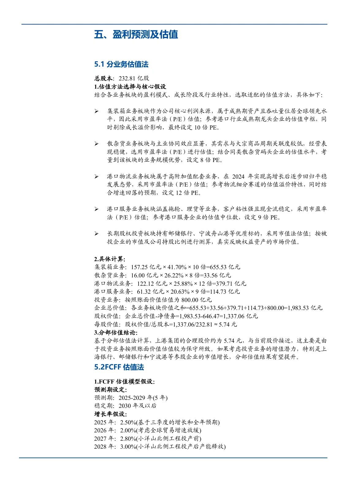
查看本页文字（表格与公式以原页为准）
五、盈利预测及估值 5.1 分业务估值法 总股本：232.81 亿股 1.估值方法选择与核心假设 结合各业务板块的盈利模式、成长阶段及行业特性，选取适配的估值方法，具体如下： ➢ 集装箱业务板块作为公司核心利润来源，属于成熟期资产且吞吐量位居全球领先水 平， 因此采用市盈率法 （P/E） 估值； 参考港口行业成熟期龙头企业的估值中枢，同 时剔除成长溢价影响，最终设定 10 倍 PE。 ➢ 散杂货业务板块与主业协同效应显著，其需求与大宗商品周期关联度较低，经营表 现稳健， 选用市盈率法 （P/E） 进行估值； 结合同类散杂货码头企业的估值水平，考 量到该板块的业务规模优势，设定 8 倍 PE。 ➢ 港口物流业务板块属于高附加值配套业务，在 2024 年实现高增长后逐步回归平稳 发展态势，采用市盈率法 （P/E） 估值；参考物流细分赛道的估值溢价特性， 同时结 合增速回落的预期，设定 12 倍 PE。 ➢ 港口服务业务板块涵盖拖轮、理货等业务，客户粘性强且现金流稳定，采用市盈率 法（ P/E）估值；参考港口服务企业的估值中位数，设定 9 倍 PE。 ➢ 长期股权投资板块持有邮储银行、宁波舟山港等优质标的，采用市值法估值；按被 投企业的市值及公司持股比例进行测算，真实反映权益资产的市场价值。 2.具体计算： 集装箱业务：157.25 亿元×41.70%×10 倍=655.53 亿元 散杂货业务：16.00 亿元×26.22%×8 倍=33.56 亿元 港口物流业务：122.12 亿元×25.88%×12 倍=379.71 亿元 港口服务业务：61.32 亿元×20.63%×9 倍=114.73 亿元 投资业务：按照账面价值估值为 800.00 亿元 企业总价值：各业务板块价值之和=655.53+33.56+379.71+114.73+800.00=1,983.53 亿元 股权价值：企业总价值-净债务=1,983.53-646.47=1,337.06 亿元 每股价值：股权价值/总股本=1,337.06/232.81≈5.74 元 3.分部估值结论： 基于分部估值法计算，上港集团的合理股价约为5.74 元，与当前股价接近，这主要是由 于投资业务按照账面价值估值较为保守所致。如果考虑投资业务的增值潜力，特别是上 海银行、邮储银行和宁波港等参股企业的市值增长，分部估值结果有望提升。 5.2FCFF 估值法 1.FCFF 估值模型假设： 预测期设定： 预测期：2025-2029 年(5 年) 稳定期：2030 年及以后 增长率假设： 2025 年：2.50%(基于三季度的增长和全年预期) 2026 年：2.00%(考虑全球贸易增速放缓) 2027 年：2.80%(小洋山北侧工程投产前) 2028 年：3.00%(小洋山北侧工程投产后产能释放)
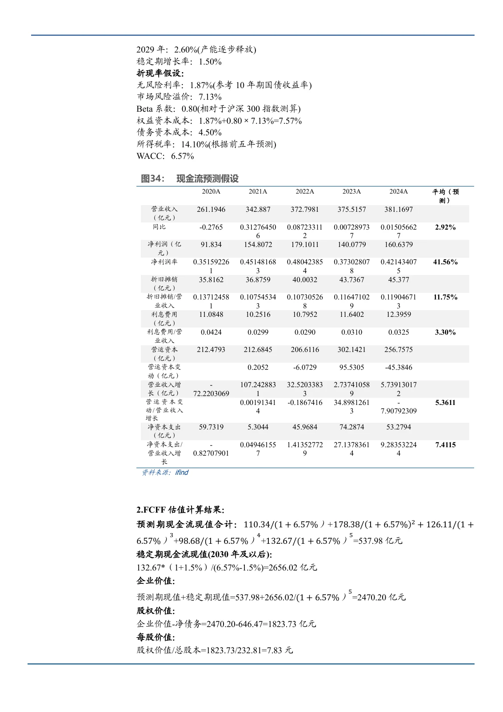
查看本页文字（表格与公式以原页为准）
2029 年：2.60%(产能逐步释放) 稳定期增长率：1.50% 折现率假设： 无风险利率：1.87%(参考 10 年期国债收益率) 市场风险溢价：7.13% Beta 系数：0.80(相对于沪深 300 指数测算) 权益资本成本：1.87%+0.80×7.13%=7.57% 债务资本成本：4.50% 所得税率：14.10%(根据前五年预测) WACC：6.57% 2.FCFF 估值计算结果： 预测 期现金流现值 合计： 110.34/(1 + 6.57%） +178.38/(1 + 6.57%)2 + 126.11/(1 + 6.57%） 3 +98.68/(1 + 6.57%） 4 +132.67/(1 + 6.57%） 5 =537.98 亿元 稳定期现金流现值(2030 年及以后)： 132.67*（ 1+1.5%）/(6.57%-1.5%)=2656.02 亿元 企业价值： 预测期现值+稳定期现值=537.98+2656.02/(1 + 6.57%） 5 =2470.20 亿元 股权价值： 企业价值-净债务=2470.20-646.47=1823.73 亿元 每股价值： 股权价值/总股本=1823.73/232.81=7.83 元 图34： 现金流预测假设 2020A 2021A 2022A 2023A 2024A 平均（预 测） 营业收入 （亿元） 261.1946 342.887 372.7981 375.5157 381.1697 同比 -0.2765 0.31276450 6 0.08723311 2 0.00728973 7 0.01505662 7 2.92% 净利润（亿 元） 91.834 154.8072 179.1011 140.0779 160.6379 净利润率 0.35159226 1 0.45148168 3 0.48042385 4 0.37302807 8 0.42143407 5 41.56% 折旧摊销 （亿元） 35.8162 36.8759 40.0032 43.7367 45.377 折旧摊销/营 业收入 0.13712458 1 0.10754534 3 0.10730526 8 0.11647102 9 0.11904671 3 11.75% 利息费用 （亿元） 11.0848 10.2516 10.7952 11.6402 12.3959 利息费用/营 业收入 0.0424 0.0299 0.0290 0.0310 0.0325 3.30% 营运资本 （亿元） 212.4793 212.6845 206.6116 302.1421 256.7575 营运资本变 动（亿元） 0.2052 -6.0729 95.5305 -45.3846 营业收入增 长（亿元） - 72.2203069 107.242883 1 32.5203383 3 2.73741058 9 5.73913017 2 营 运 资 本 变 动 / 营业收入 增长 0.00191341 4 -0.1867416 34.8981261 3 - 7.90792309 5.3611 净资本支出 （亿元） 59.7319 5.3044 45.9684 74.2874 53.2794 净资本支出/ 营业收入增 长 - 0.82707901 0.04946155 7 1.41352772 9 27.1378361 4 9.28353224 4 7.4115 资料来源：ifind
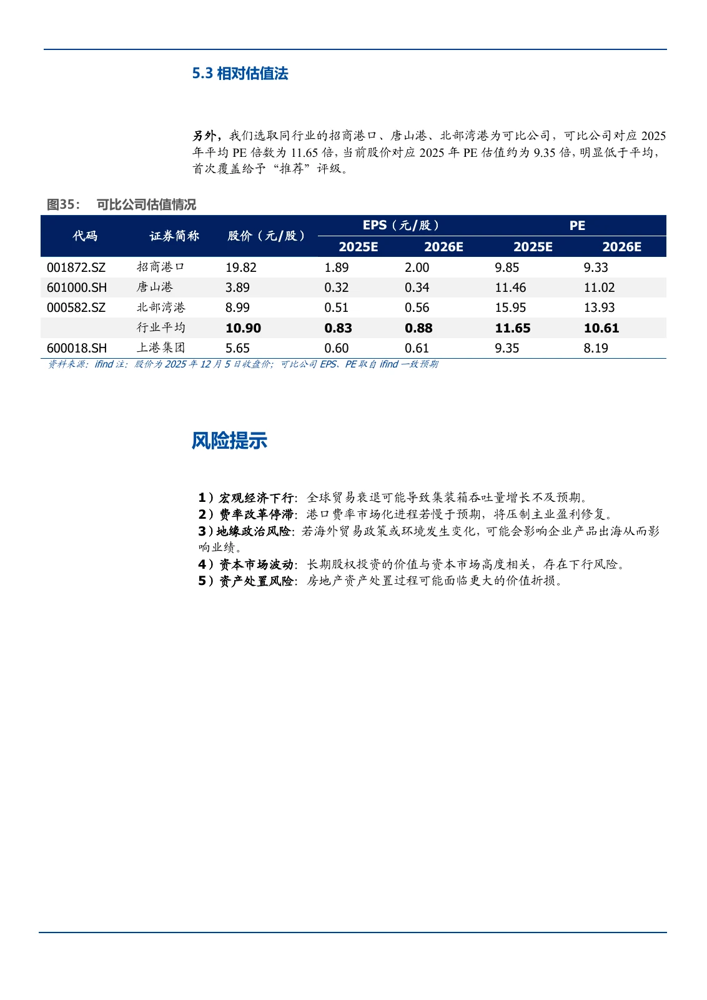
查看本页文字（表格与公式以原页为准）
5.3 相对估值法 另外，我们选取同行业的招商港口、唐山港、北部湾港为可比公司，可比公司对应 2025 年平均 PE 倍数为 11.65 倍， 当前股价对应2025 年 PE 估值约为 9.35 倍， 明显低于平均， 首次覆盖给予“推荐”评级。 图35： 可比公司估值情况 代码 证券简称 股价（元 /股） EPS（元 /股） PE 2025E 2026E 2025E 2026E 001872.SZ 招商港口 19.82 1.89 2.00 9.85 9.33 601000.SH 唐山港 3.89 0.32 0.34 11.46 11.02 000582.SZ 北部湾港 8.99 0.51 0.56 15.95 13.93 行业平均 10.90 0.83 0.88 11.65 10.61 600018.SH 上港集团 5.65 0.60 0.61 9.35 8.19 资料来源：ifind 注：股价为 2025 年 12 月 5 日收盘价；可比公司 EPS、PE 取自 ifind 一致预期 风险提示 1）宏观经济下行：全球贸易衰退可能导致集装箱吞吐量增长不及预期。 2）费率改革停滞：港口费率市场化进程若慢于预期，将压制主业盈利修复。 3） 地缘政治风险： 若海外贸易政策或环境发生变化， 可能会影响企业产品出海从而影 响业绩。 4）资本市场波动：长期股权投资的价值与资本市场高度相关，存在下行风险。 5）资产处置风险：房地产资产处置过程可能面临更大的价值折损。
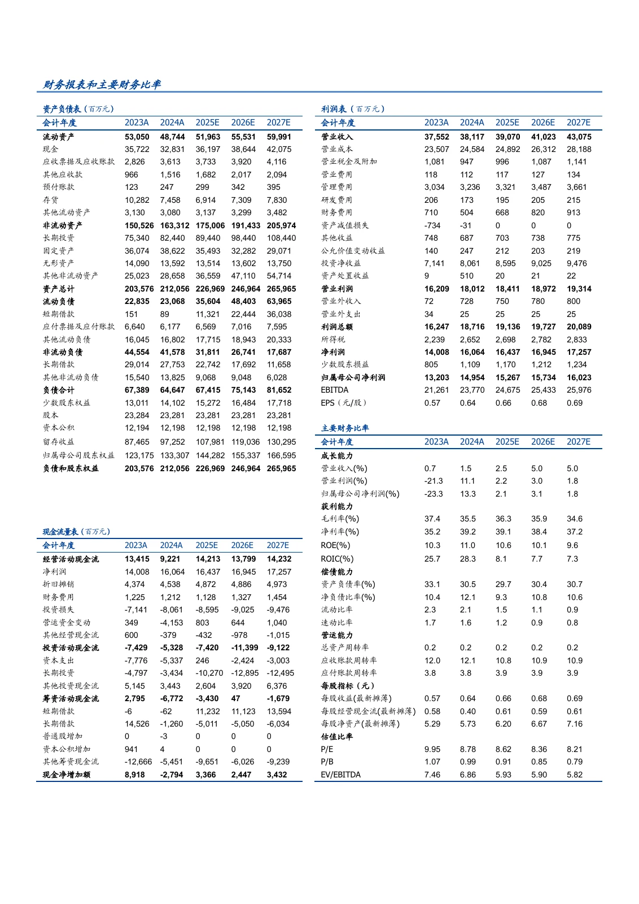
查看本页文字（表格与公式以原页为准）
财务报表和主要财务比率
资 产 负 债 表 （百万元） 利润表（ 百万元）
会计年度 2023A 2024A 2025E 2026E 2027E 会计年度 2023A 2024A 2025E 2026E 2027E
流动资产 53,050 48,744 51,963 55,531 59,991 营业收入 37,552 38,117 39,070 41,023 43,075
现金 35,722 32,831 36,197 38,644 42,075 营业成本 23,507 24,584 24,892 26,312 28,188
应收票据及应收账款 2,826 3,613 3,733 3,920 4,116 营业税金及附加 1,081 947 996 1,087 1,141
其他应收款 966 1,516 1,682 2,017 2,094 营业费用 118 112 117 127 134
预付账款 123 247 299 342 395 管理费用 3,034 3,236 3,321 3,487 3,661
存货 10,282 7,458 6,914 7,309 7,830 研发费用 206 173 195 205 215
其他流动资产 3,130 3,080 3,137 3,299 3,482 财务费用 710 504 668 820 913
非流动资产 150,526 163,312 175,006 191,433 205,974 资产减值损失 -734 -31 0 0 0
长期投资 75,340 82,440 89,440 98,440 108,440 其他收益 748 687 703 738 775
固定资产 36,074 38,622 35,493 32,282 29,071 公允价值变动收益 140 247 212 203 219
无形资产 14,090 13,592 13,514 13,602 13,750 投资净收益 7,141 8,061 8,595 9,025 9,476
其他非流动资产 25,023 28,658 36,559 47,110 54,714 资产处置收益 9 510 20 21 22
资产总计 203,576 212,056 226,969 246,964 265,965 营业利润 16,209 18,012 18,411 18,972 19,314
流动负债 22,835 23,068 35,604 48,403 63,965 营业外收入 72 728 750 780 800
短期借款 151 89 11,321 22,444 36,038 营业外支出 34 25 25 25 25
应付票据及应付账款 6,640 6,177 6,569 7,016 7,595 利润总额 16,247 18,716 19,136 19,727 20,089
其他流动负债 16,045 16,802 17,715 18,943 20,333 所得税 2,239 2,652 2,698 2,782 2,833
非流动负债 44,554 41,578 31,811 26,741 17,687 净利润 14,008 16,064 16,437 16,945 17,257
长期借款 29,014 27,753 22,742 17,692 11,658 少数股东损益 805 1,109 1,170 1,212 1,234
其他非流动负债 15,540 13,825 9,068 9,048 6,028 归属母公司净利润 13,203 14,954 15,267 15,734 16,023
负债合计 67,389 64,647 67,415 75,143 81,652 EBITDA 21,261 23,770 24,675 25,433 25,976
少数股东权益 13,011 14,102 15,272 16,484 17,718 EPS（元 /股） 0.57 0.64 0.66 0.68 0.69
股本 23,284 23,281 23,281 23,281 23,281
资本公积 12,194 12,198 12,198 12,198 12,198 主要财务比率
留存收益 87,465 97,252 107,981 119,036 130,295 会计年度 2023A 2024A 2025E 2026E 2027E
归属母公司股东权益 123,175 133,307 144,282 155,337 166,595 成长能力
负债和股东权益 203,576 212,056 226,969 246,964 265,965 营业收入(%) 0.7 1.5 2.5 5.0 5.0
营业利润(%) -21.3 11.1 2.2 3.0 1.8
归属母公司净利润(%) -23.3 13.3 2.1 3.1 1.8
获利能力
毛利率(%) 37.4 35.5 36.3 35.9 34.6
现 金 流 量 表 （百万元） 净利率(%) 35.2 39.2 39.1 38.4 37.2
会计年度 2023A 2024A 2025E 2026E 2027E ROE(%) 10.3 11.0 10.6 10.1 9.6
经营活动现金流 13,415 9,221 14,213 13,799 14,232 ROIC(%) 25.7 28.3 8.1 7.7 7.3
净利润 14,008 16,064 16,437 16,945 17,257 偿债能力
折旧摊销 4,374 4,538 4,872 4,886 4,973 资产负债率(%) 33.1 30.5 29.7 30.4 30.7
财务费用 1,225 1,212 1,128 1,327 1,454 净负债比率(%) 10.4 12.1 9.3 10.8 10.6
投资损失 -7,141 -8,061 -8,595 -9,025 -9,476 流动比率 2.3 2.1 1.5 1.1 0.9
营运资金变动 349 -4,153 803 644 1,040 速动比率 1.7 1.6 1.2 0.9 0.8
其他经营现金流 600 -379 -432 -978 -1,015 营运能力
投资活动现金流 -7,429 -5,328 -7,420 -11,399 -9,122 总资产周转率 0.2 0.2 0.2 0.2 0.2
资本支出 -7,776 -5,337 246 -2,424 -3,003 应收账款周转率 12.0 12.1 10.8 10.9 10.9
长期投资 -4,797 -3,434 -10,270 -12,895 -12,495 应付账款周转率 3.8 3.8 3.9 3.9 3.9
其他投资现金流 5,145 3,443 2,604 3,920 6,376 每股指标（元）
筹资活动现金流 2,795 -6,772 -3,430 47 -1,679 每股收益(最新摊薄) 0.57 0.64 0.66 0.68 0.69
短期借款 -6 -62 11,232 11,123 13,594 每股经营现金流(最新摊薄) 0.58 0.40 0.61 0.59 0.61
长期借款 14,526 -1,260 -5,011 -5,050 -6,034 每股净资产(最新摊薄) 5.29 5.73 6.20 6.67 7.16
普通股增加 0 -3 0 0 0 估值比率
资本公积增加 941 4 0 0 0 P/E 9.95 8.78 8.62 8.36 8.21
其他筹资现金流 -12,666 -5,451 -9,651 -6,026 -9,239 P/B 1.07 0.99 0.91 0.85 0.79
现金净增加额 8,918 -2,794 3,366 2,447 3,432 EV/EBITDA 7.46 6.86 5.93 5.90 5.82